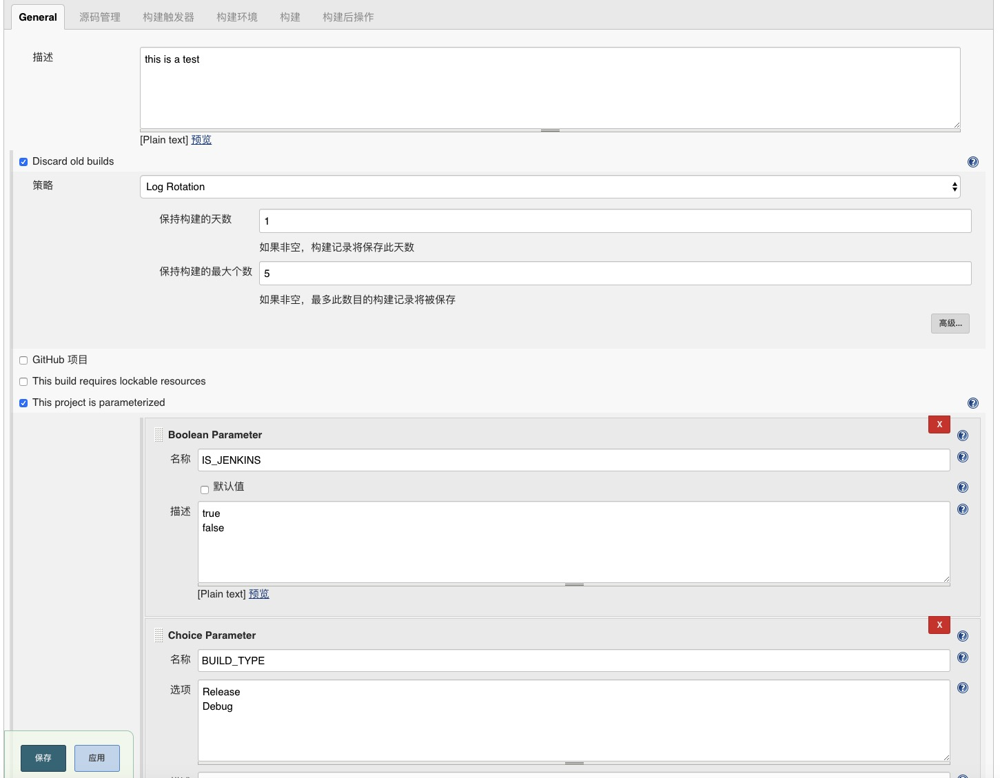

由于项目要用Jenkins实现自动化部署打包,学习下并在此记录
什么是Jenkins
Jenkins是一款开源CI&CD软件，用于自动化各种任务，包括构建、测试和部署软件
CI:持续集成（CONTINUOUS INTEGRATION）
CD:持续交付（CONTINUOUS DELIVERY）
CD:持续部署（CONTINUOUS DEPLOYMENT）
Jenkins支持各种运行方式，可通过系统包、Docker或者通过一个独立的Java程序
Mac下安装
获取密码
Mac下安装Jenkins,在浏览器的Unlock Jenkins界面获取到的/Users/Shared/Jenkins/Home/secrets/initialAdminPassword命令,在通过终端$ cat /Users/Shared/Jenkins/Home/secrets/initialAdminPassword命令获取密码时,出现Permission denied的错误;
正确的获取密码的方法:
- 导航到/Users/Shared/Jenkins/Home文件夹,可以通过shift+command+g导航到相应的目录;
- 右键单击secrets文件夹，选择显示简介;
- 滚动到最下面，然后单击右下角的锁定图像>输入您的密码>确定;
- 点击弹出窗口左下角的“+”,将当前电脑用户添加到共享与权限中,设置为只读或读与写;
- 打开secrets文件夹,找到该initialAdminPassword文件以获取初始的管理员密码,如果您没有该文件的权限,则需要右键单击该文件并选择显示简介,然后重复上述步骤3和4访问该文件.
安装
- 选择安装建议的插件
- 等待安装过程。。。。(不知道是我的原因还是什么情况，这个过程非常漫长，耐心等待)
下载插件
Manage Jenkins—>Manage Plugins
- gradle plugin
配置环境
JDK
Manage Jenkins–>Global Tool Configuration–>JDK
第一个参数 别名 随便写
第二个参数 JAVA_HOME 要写自己的本地的JDK 环境变量SDK
Manage Jenkins—>Configure System—>全局属性—->Environment variables
键 ANDROID_HOME
值 /Users/**/Library/Android/sdk
Gradle
Manage Jenkins–>Global Tool Configuration–>GRADLE
第一个参数 别名 随便写
第二个参数 GRADLE_HOME 要写自己的本地的Gradle 环境变量git
Manage Jenkins–>Global Tool Configuration–>Git
新建一个Job
- 输入一个新建job名字
- 选择Freestyle project –>确定
- 进入配置页面
 - 源码管理 选择git ,Repository URL就填写你项目地址,Credentials需要配置证书,点击添加

选择分之 - 构建参数
可以根据自己的项目填写相应的Tasks